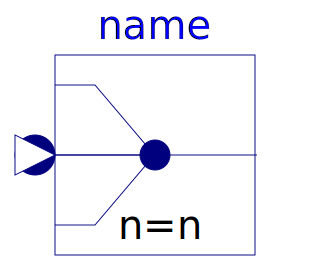
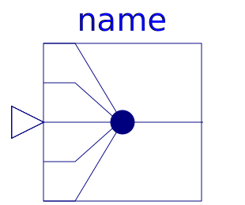
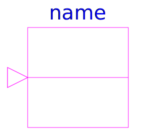

This package contains blocks to combine and extract signals.
| Name | Description |
|---|---|
| Signal replicator | |
| Integer signal replicator | |
| Boolean signal replicator | |
| Extract signals from an input signal vector | |
| Extract scalar signal out of signal vector dependent on IntegerRealInput index | |
|  Multiplex | Multiplexer block for arbitrary number of input connectors |
| Multiplexer block for two input connectors | |
| Multiplexer block for three input connectors | |
| Multiplexer block for four input connectors | |
|  Multiplex5 | Multiplexer block for five input connectors |
| Multiplexer block for six input connectors | |
| DeMultiplexer block for arbitrary number of output connectors | |
| DeMultiplexer block for two output connectors | |
| DeMultiplexer block for three output connectors | |
| DeMultiplexer block for four output connectors | |
| DeMultiplexer block for five output connectors | |
| DeMultiplexer block for six output connectors | |
| Pass a Real signal through without modification | |
| Pass a Integer signal through without modification | |
|  BooleanPassThrough | Pass a Boolean signal through without modification |